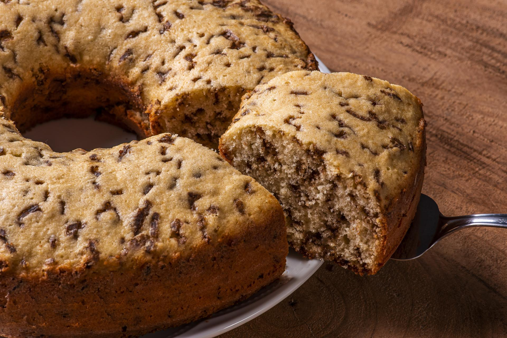

Receita de Bolo Formigueiro

Ingredientes
- 2 xícaras de farinha
- 1 colher de fermento em pó
- 1/2 xícara de óleo
- 1/2 pacotinho de 100 g de chocolate granulado
- 2 xícaras de açúcar
- 3 ovos
- 1 xícara de leite
Modo de preparo
- Coloque em uma vasilha a farinha, o açúcar e o fermento e mexa.
- Adicione os ovos, o óleo, o leite e mexa tudo.
- Adicione o chocolate granulado e mexa.
- Leve ao forno em uma forma untada e enfarinhada por aproximadamente 25 minutos no forno médio (180°).
Este bolo é uma ótima ideia para receber visitas em casa para um delicioso café da tarde!